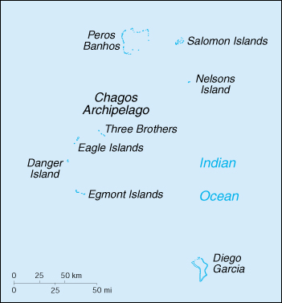

(overseas territory of the UK)

|
British Indian Ocean Territory (overseas territory of the UK) |
|
| Introduction Geography People Government Economy Communications Transportation Military Transnational Issues | ||
|  | ||
| British Indian Ocean Territory | Introduction | Top of Page |
| Background: | Established as a territory of the UK in 1965, a number of the British Indian Ocean Territory (BIOT) islands were transferred to the Seychelles when it attained independence in 1976. Subsequently, BIOT has consisted only of the six main island groups comprising the Chagos Archipelago. The largest and most southerly of the islands, Diego Garcia, contains a joint UK-US naval support facility. All of the remaining islands are uninhabited. Former agricultural workers, earlier resident in the islands, were relocated primarily to Mauritius but also to the Seychelles, between 1967 and 1973. In 2000, a British High Court ruling invalidated the local immigration order which had excluded them from the archipelago, but upheld the special military status of Diego Garcia. |
| British Indian Ocean Territory | Geography | Top of Page |
| Location: | Southern Asia, archipelago in the Indian Ocean, about one-half the way from Africa to Indonesia |
| Geographic coordinates: | 6 00 S, 71 30 E |
| Map references: | World |
| Area: |
total:
60 sq km
land: 60 sq km water: 0 sq km note: includes the entire Chagos Archipelago |
| Area - comparative: | about 0.3 times the size of Washington, DC |
| Land boundaries: | 0 km |
| Coastline: | 698 km |
| Maritime claims: |
exclusive fishing zone:
200 NM
territorial sea: 3 NM |
| Climate: | tropical marine; hot, humid, moderated by trade winds |
| Terrain: | flat and low (most areas do not exceed four meters in elevation) |
| Elevation extremes: |
lowest point:
Indian Ocean 0 m
highest point: unnamed location on Diego Garcia 15 m |
| Natural resources: | coconuts, fish, sugarcane |
| Land use: |
arable land:
0%
permanent crops: 0% permanent pastures: 0% forests and woodland: NA% other: NA% |
| Irrigated land: | 0 sq km (1993) |
| Natural hazards: | NA |
| Environment - current issues: | NA |
| Geography - note: | archipelago of 2,300 islands; Diego Garcia, largest and southernmost island, occupies strategic location in central Indian Ocean; island is site of joint US-UK military facility |
| British Indian Ocean Territory | People | Top of Page |
| Population: |
no indigenous inhabitants
note: approximately 1,200 former agricultural workers resident in the Chagos Archipelago, often referred to as Chagossians or Ilois, were relocated to Mauritius and the Seychelles around the time of the construction of UK-US military facilities; in 1995, there were approximately 1,700 UK and US military personnel and 1,500 civilian contractors living on the island of Diego Garcia |
| British Indian Ocean Territory | Government | Top of Page |
| Country name: |
conventional long form:
British Indian Ocean Territory
conventional short form: none abbreviation: BIOT |
| Dependency status: | overseas territory of the UK; administered by a commissioner, resident in the Foreign and Commonwealth Office in London |
| Legal system: | the laws of the UK, where applicable, apply |
| Executive branch: |
chief of state:
Queen ELIZABETH II (since 6 February 1952)
head of government: Commissioner John WHITE (since NA); Administrator Louise SAVILL (since NA); note - both reside in the UK cabinet: NA elections: none; the monarch is hereditary; commissioner and administrator appointed by the monarch |
| Diplomatic representation in the US: | none (overseas territory of the UK) |
| Diplomatic representation from the US: | none (overseas territory of the UK) |
| Flag description: | white with six blue wavy horizontal stripes; the flag of the UK is in the upper hoist-side quadrant; the striped section bears a palm tree and yellow crown centered on the outer half of the flag |
| British Indian Ocean Territory | Economy | Top of Page |
| Economy - overview: | All economic activity is concentrated on the largest island of Diego Garcia, where joint UK-US defense facilities are located. Construction projects and various services needed to support the military installations are done by military and contract employees from the UK, Mauritius, the Philippines, and the US. There are no industrial or agricultural activities on the islands. When the Ilois return, they plan to reestablish sugarcane production and fishing. |
| Electricity - production: | NA kWh; note - electricity supplied by the US military |
| Electricity - consumption: | NA kWh |
| British Indian Ocean Territory | Communications | Top of Page |
| Telephones - main lines in use: | NA |
| Telephone system: |
general assessment:
separate facilities for military and public needs are available
domestic: all commercial telephone services are available, including connection to the Internet international: international telephone service is carried by satellite (2000) |
| Radio broadcast stations: | AM 1, FM 2, shortwave 0 (1998) |
| Radios: | NA |
| Television broadcast stations: | 1 (1997) |
| Televisions: | NA |
| Internet country code: | .io |
| Internet Service Providers (ISPs): | 1 (2000) |
| British Indian Ocean Territory | Transportation | Top of Page |
| Highways: |
total:
NA km
paved: short stretch of paved road of NA km between port and airfield on Diego Garcia unpaved: NA km |
| Waterways: | none |
| Ports and harbors: | Diego Garcia |
| Airports: | 1 (2000 est.) |
| Airports - with paved runways: |
total:
1
over 3,047 m: 1 (2000 est.) |
| British Indian Ocean Territory | Military | Top of Page |
| Military - note: | defense is the responsibility of the UK; the US lease on Diego Garcia expires in 2016 |
| British Indian Ocean Territory | Transnational Issues | Top of Page |
| Disputes - international: | the Chagos Archipelago is claimed by Mauritius and Seychelles |
{kind=link}